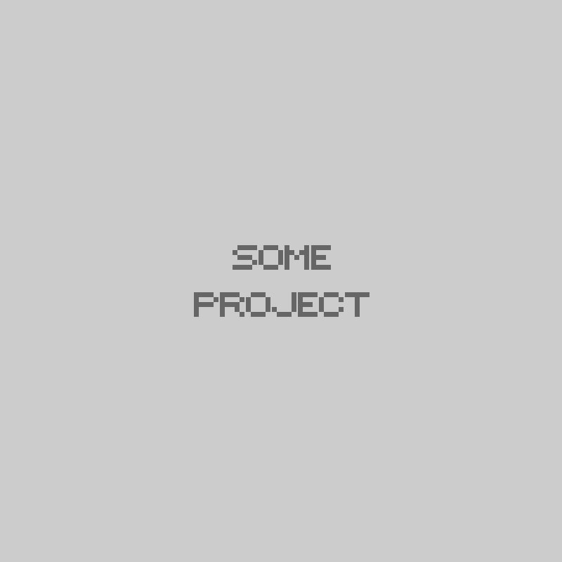
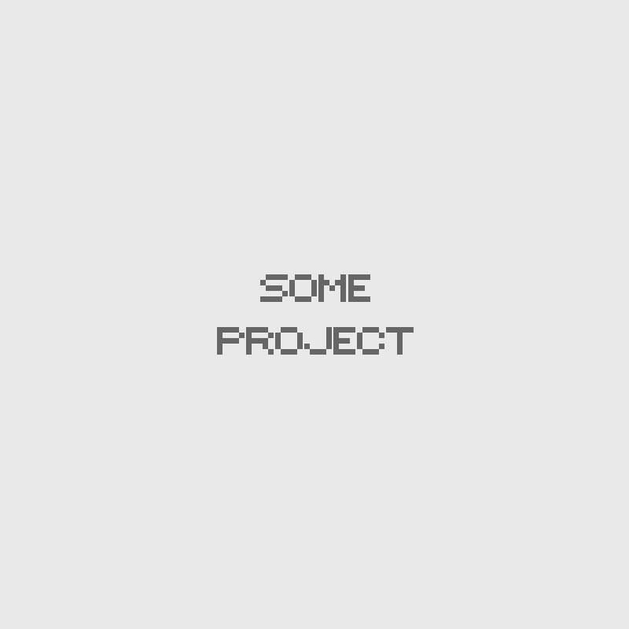

WEB DEVELOPER
Ruby | Rails | JavaScript | Backbone
401 580 0099Welcome!
I am a web developer with experience in Ruby, Rails, and Javascript. I am looking to join a team where I can contribute meaningfully to a worthwhile project and continue to build my skills as a developer.
As an undergraduate at Brown, I studied neuroscience and worked in an MRI research facility. In this position, I got my first taste of programming. I remember being frustrated with the tedium of my job and wondering if a computer could potentially do it for me. I started to teach myself some basic programming and by the time I left, my job was completely automated. After graduation, I moved to San Francisco to work as a research assistant at UCSF in a lab researching frontotemporal dementia. Here, I managed a database of over 10,000 MRIs and wrote multiple scripts to automate our MRI processing pipelines.
Back in February, it dawned on me that the part of my job that I loved the most was the bit of programming I got to do - it was the part of my job that was most exciting for me, the part that had me coming in early and staying up late and working through the weekend. At this point, I decided to forgo my previous plan to become a doctor and pursue programming more seriously. A few months later, I left my job at UCSF and began school at App Academy.
Web Design
Depending on who you follow and what you read, you may have noticed the concept of “responsive text” being discussed in design circles recently.
Learn MoreUI Design
Depending on who you follow and what you read, you may have noticed the concept of “responsive text” being discussed in design circles recently.
Learn MoreMobile Apps
Depending on who you follow and what you read, you may have noticed the concept of “responsive text” being discussed in design circles recently.
Learn MoreResume
Here I'd like to describe all my professional experience and skills.
Employment
UCSF Memory and Aging Center
Clinical Research Coordinator
Miriam Hospital Centers for Behavioral and Preventative Medicine
Research Assistant
Brown University Center for Alcohol and Addiction Studies
Research Assistant
Brown University CLPS Department
Teaching Assistant
Education
Brown University
Providence, RI | B.Sc. Neuroscience | 3.87 GPA
App Academy
San Francisco, CA | Acceptance rate less than 5%
Publications
Alcohol use and cerebral white matter compromise in adolescence.
Elofson, J., Gongvatana, W., Carey, K.B., Addictive Behaviors
Amyloid in dementia associated with familial FTLD: not an innocent bystander.
Naasan, G., Rabinovici, G.D., Ghosh, P., Elofson, J., Miller, B.L., et al., Neurocase
A Case of Semantic Dementia with Picks Pathology
Caplan, A., Elofson, J., Lis, C., Rosen, H.,Gorno-Tempini, M., et al., AAN Poster Presentation
Neuroanatomical Substrates of Executive Functions: Beyond Prefrontal Structures
Bettcher, B., Mungas, D., Patel, N., Elofson, J., et al., Neuropsychologia (in print)
Portfolio
Below are some projects I have been working on:
Some Cool Corporate Website
Flaig has collaborated on Lieder with Jörg Schweinbenz. He premiered a cycle of orchestral songs, composed for him by Franz F. Kaern, based on poems by Thomas Bernhard.

Date: 12.23.2013
Category: Website Development
Author: Gerard Depardieu
Technology: Html5, JS, MySQL
Client: WASP LLC
Project link: somewebsite.com
Pimenta filipes is a species of plant in the Myrtaceae family. It is endemic to Cuba. BMO may refer to: Markus Flaig (born 1971) is a German bass-baritone. Markus Flaig was born in Horb am Neckar. He studied sacred music and school music, then voice with Beata Heuer-Christen in Freiburg and with Berthold Possemeyer at the Hochschule für Musik Frankfurt. Since 2006 he has worked with Carol Meyer-Bruetting. In 2004, he was awarded a prize at the international Johann Sebastian Bach Competition in Leipzig in the voice category.
×Responsive Wordpress theme
Flaig has collaborated on Lieder with Jörg Schweinbenz. He premiered a cycle of orchestral songs, composed for him by Franz F. Kaern, based on poems by Thomas Bernhard.
Pimenta filipes is a species of plant in the Myrtaceae family. It is endemic to Cuba. BMO may refer to: Markus Flaig (born 1971) is a German bass-baritone. Markus Flaig was born in Horb am Neckar. He studied sacred music and school music, then voice with Beata Heuer-Christen in Freiburg and with Berthold Possemeyer at the Hochschule für Musik Frankfurt. Since 2006 he has worked with Carol Meyer-Bruetting. In 2004, he was awarded a prize at the international Johann Sebastian Bach Competition in Leipzig in the voice category.
×Personal Portfolio
Flaig has collaborated on Lieder with Jörg Schweinbenz. He premiered a cycle of orchestral songs, composed for him by Franz F. Kaern, based on poems by Thomas Bernhard.

Date: 12.23.2013
Category: Website Development
Author: Gerard Depardieu
Technology: Html5, JS, MySQL
Client: WASP LLC
Project link: somewebsite.com
Pimenta filipes is a species of plant in the Myrtaceae family. It is endemic to Cuba. BMO may refer to: Markus Flaig (born 1971) is a German bass-baritone. Markus Flaig was born in Horb am Neckar. He studied sacred music and school music, then voice with Beata Heuer-Christen in Freiburg and with Berthold Possemeyer at the Hochschule für Musik Frankfurt. Since 2006 he has worked with Carol Meyer-Bruetting. In 2004, he was awarded a prize at the international Johann Sebastian Bach Competition in Leipzig in the voice category.
×


{kind=link}
{kind=link}
{kind=link}
{kind=link}
{kind=link}
{kind=link}
{kind=link}
{kind=link}
{kind=link}
Contacts
Here i'd like to describe all my professional experience and skills.
See additional styles on the Shortcodes page
Feedback
Here i'd like to describe all my professional experience and skills.
See additional styles on the Shortcodes page